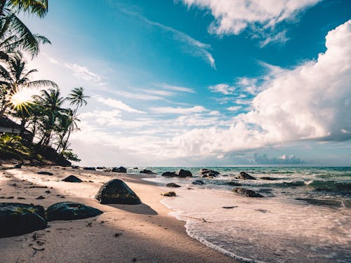
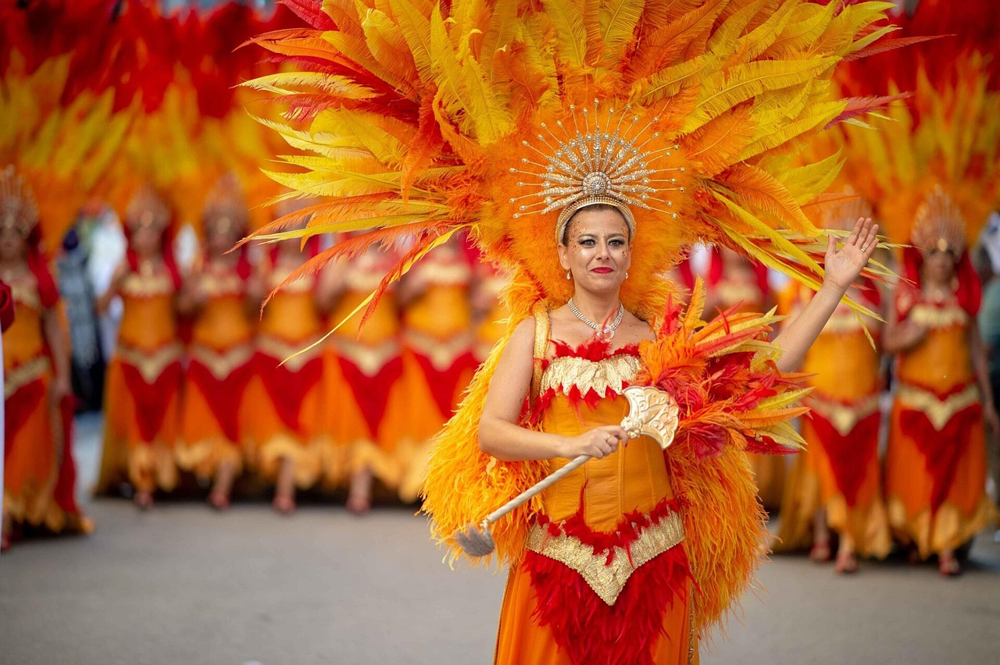
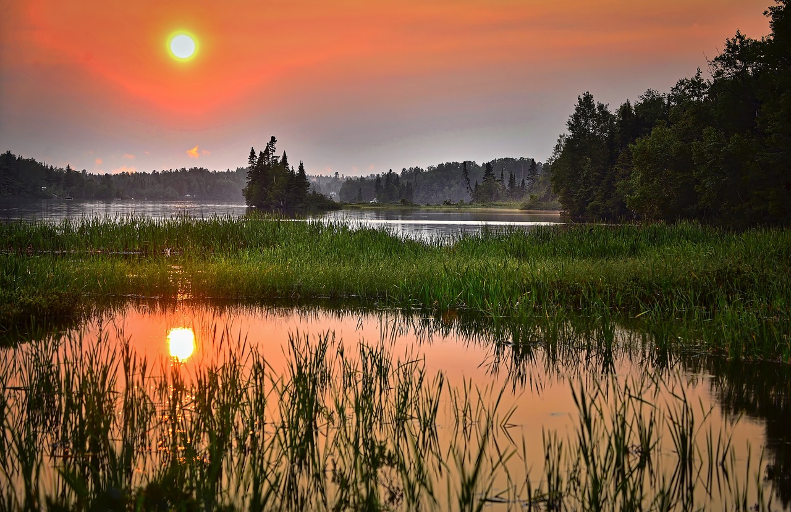
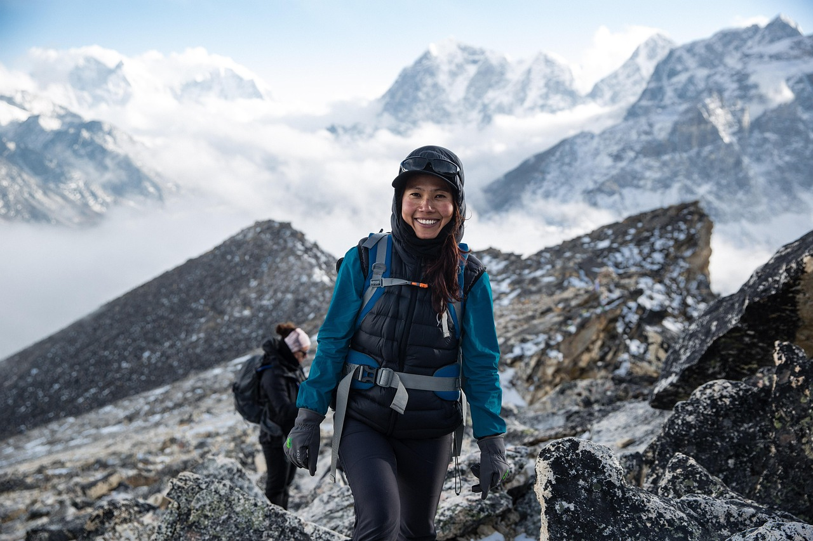
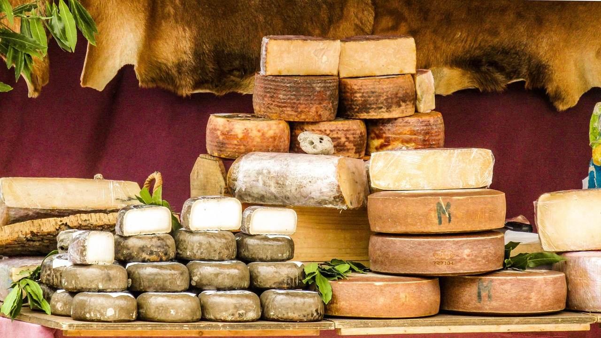

Servicios Disponibles
Explora nuestras opciones diseñadas para viajeros como tú. Ya sea que busques aventura, comodidad o cultura, tenemos algo especial.
Guías turísticos
Conoce los lugares más emblemáticos con un guía local experto. Disponible en español e inglés. Ideal para grupos o viajeros individuales.
- Duración: 2-4 horas
- Incluye entradas a sitios históricos
- Recomendado para primeras visitas
Excursiones de aventura
Senderismo, ciclismo de montaña y paseos en bote por el Lago Cristalino. Aventura asegurada en contacto con la naturaleza.
- Guías especializados en cada actividad
- Equipo incluido
- Edad mínima: 12 años
Transporte privado
Ofrecemos traslados desde y hacia el aeropuerto, además de transporte local entre atracciones.
- Disponible 24/7 con reserva previa
- Vehículos con aire acondicionado
- Choferes con experiencia turística
Paquetes personalizados
Crea un plan de viaje único según tus intereses. Ideal para familias, parejas o grupos pequeños.
- Asesoría personalizada gratuita
- Combinación de actividades y alojamiento
- 100% ajustado a tu ritmo
Estas experiencias reflejan lo que nuestros servicios pueden ofrecerte:
Algunos momentos inolvidables:
Galeria de imagenes:




